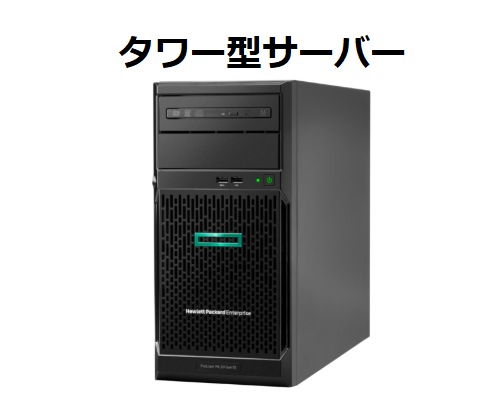
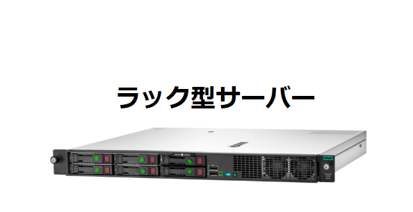
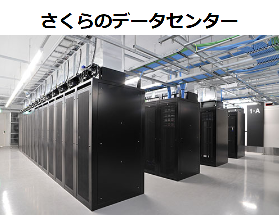

【5分でわかる】レンタルサーバーとは？なぜ必要？サービスの概要を解説！
レンタルサーバーを一言で説明するとホームページやワードプレスのデータを置いておく高性能のパソコンであり、なおかつ
メールアドレスが作れてメールデータの保存もしておけるパソコンだと言えます。
このように、基本的にレンタルサーバーの役割は「データを置けること」になります。
このページではレンタルサーバーの概要について詳しく説明を行います。出来ることや料金体系。またサービスの種類などについて解説します。
レンタルサーバーで出来ること
レンタルサーバーにデータを置くことで作れるものはいくつかあります。実際に作れるものを紹介していきましょう。
１．ホームページが作れる
まず、レンタルサーバーで出来ることの１つは「ホームページ」が作れることになります。
テキストエディタで作成したHTMLデータをFTPソフトを使ってレンタルサーバーまでアップします。
そうすることでレンタルサーバーにホームページのデータが保存されます。ただしデータだけあってもホームページは表示されません。
独自ドメインを登録して、ドメインに対してネームサーバー設定をすることで始めてホームページURLが完成しページが表示されます。
２．ワードプレスも簡単に作れる
ホームページの一種であるワードプレスも作ることが出来ます。ワードプレスはCMSと呼ばれるホームページ簡易作成サービスになります。
ワードプレスだと管理画面を開いてエディタ画面に文章を書き込むだけでページを作ることが出来ます。普通にホームページを作る場合は
HTMLの知識がいりますがワードプレスなら何も知らなくてもホームページが作れます。
ワードプレスはデータベースも用いるため最初に様々な設定が必要になります。
ただし最近のレンタルサーバーには、ワードプレスが簡単に構築できる「かんたんセットアップ」サービスが提供されていて
誰でも10分～30分もあればワードプレスが作れるようになっています。
３．メールアドレスが作れる
また、専用のメールアドレスも作ることが出来ます。会社のメールアドレス、社員のメールアドレス、チームのメーリングリストなども作れます。
このように「ホームページ」と「メールアドレス」が持てるようになること。この点がレンタルサーバーを借りて出来ることになります。
なぜ必要？
データが読込みできなければホームページのページも表示されない
レンタルサーバーがなければホームページのデータを読み込むことが出来ません。当然、データが読み込まれなければページも表示されません。
そしてデータが入っていたとしてもレンタルサーバーの電源がOFFになっている場合、データの読込みが出来ないためページは表示されません。
そのためレンタルサーバーは常に電源が入っていることを前提としてサービスが提供されています。
レンタルサーバーがなければメールの送受信もできない
メールについても同じことが言えます。メールの諸設定はレンタルサーバー側で行います。レンタルサーバーでデータの送信や受信を担っているので
サーバーがなければメールをすることは出来ません。
どんな機械？
ラック型とタワー型がある
サーバーにはラック型と呼ばれる物と、タワー型と呼ばれるものがあります。タワー型については、見た目は
ほぼデスクトップパソコンと同じになります。ラック型のものは平たい形になっているため、ラックと呼ばれる棚に何台も設置することが可能になっています。
レンタルサーバー事業者の場合、整理がしやすいラック型を購入しています。タワー型は法人企業が直接自社でサーバーを設置する際に購入することが多いでしょう。


レンタルサーバーはデータセンターで管理されている
レンタルサーバーは基本的にはレンタルサーバー会社のデータセンターにあります。100台、200台、多ければ1万台のレンタルサーバーが管理されています。
そしてデーターセンターはレンタルサーバーが滞りなく稼働できるために、適切な空調管理を行い、停電時などもつねに電力の供給ができるように作られています。

さくらインターネットHPより
レンタルサーバーの価格
レンタルサーバー事業者が導入するような企業用向けのサーバーは1台50万～100万円もします。高いサーバーであれば300万以上の価格のサーバーもあります。
サービスの利用で月額料金はどれくらいかかるのか？
レンタルサーバーは様々なサービスが提供されていてプランも多く料金もそれぞれ異なります。
ここでは3つのタイプにわけて、標準的な料金を紹介してみたいと思います。
標準プランだと1,200円～1,500円が平均的な料金
もっともレンタルサーバーの登録者が多いとされるのは1,200円～1,500円ぐらいの標準プランの価格帯になります。
この価格帯のレンタルサーバーにはエックスサーバー、Conoha WING、お名前レンタルサーバーなど人気のレンタルサーバーがあります。
低価格プランなら500円以下
低価格プランの場合、大体500円以下で借りることが出来ます。ワードプレスを作りたい場合は大体300円以上のプランが必要になります。
100円～200円のプランもありますが、この場合データベースの提供がないためワードプレスが作れないプランになっています。
低価格プランのレンタルサーバーもかなり事業者が多くなっていますがスターサーバー、コアサーバー、さくらのレンタルサーバーが知られています。
ビジネスプランなら2,000円～5,000円
法人向けのビジネスプランの場合、料金は標準プランよりも高くなります。その分、Webサーバーとメールサーバーを分離管理するなど安定性が確保されている
サービスが多くなっています。セキュリティ面も充実していることがビジネスプランの特徴と言えるでしょう。
その他にも、設定を事業者にお任せできるサービスも多くのビジネスプランで提供されています。
料金については価格帯がひろくなっています。大体2,000円から5,000円の月額費用がビジネスプランの範囲になります。
レンタルサーバーの種類は？
また、レンタルサーバーはそのサービス体系によって「共用サーバー」「専用サーバー（マネージドサーバー）」という種類に分けることが出来ます。
それぞれの特徴があるのか説明します。
共用サーバー（1台を複数の人数でシェアするタイプ）
1台のレンタルサーバーを30人～50人のように複数の人数で共用するサービスが共用サーバーとなります。
基本的にレンタルサーバーのサービスで最も多くの事業者が導入している形態になります。
共用サーバーのメリットはサービスを利用する人数が多いため料金が低くなること。デメリットは一緒のサーバーに入っている加入者の
サイトが混雑するとその影響を受けて表示速度が遅くなってしまうこともある点になります。
専用サーバー（1台を丸ごと借りるタイプ）
1台のレンタルサーバーを丸ごと1人で使うことが出来るサービスが専用サーバーになります。
専用サーバーのメリットは1台専有のため管理の自由度が高いこと。またデータ容量も多く確保できること。などがあります。
デメリットは1台を1人利用するためコストが高いこと。また共用サーバーと違って管理保守は自分で行うことになり、
Webサーバーのインストールなど難しい設定を行う必要があるため管理には専門知識を持った人が必要になります。
マネージドサーバー（1台丸ごと借りれて、管理も共用サーバーのように簡単）
また、同じ専用サーバーでも難しい保守管理については事業者が行ってくれるサービスがあります。それをマネージドサーバーと呼びます。
そのため共用サーバーのようにサービスを利用できます。
メリットは1台を1人で専有できること。難しい設定は行わなくてよいこと。になります。デメリットはコストが高いこと。専用サーバーの1.5倍ぐらいは料金がかかります。
レンタルサーバーの選び方
レンタルサーバーがどういうものなのか理解できたところで、
次に考えることは「どこのどのレンタルサーバーを借りればいいのか？」という点になります。
プラン選びはCPUやメモリだけでなく、他にも様々な要素が関わってくるため迷ってしまうと思いますが、
10つの要素を詳しく比較していますので、検討の判断材料にして下さい。
設定が不得意な方は：「ワードプレス簡単インストール」
安定性を求める方は：「稼働率」
この記事の著者・プロフィール
Web制作を始めて約19年になります（HTML/css、Photoshop、Webマーケティング）。2005年から当サイトの運営を開始。
これまでに300個以上のドメインを取得、10社を超えるレンタルサーバーを利用してきました。